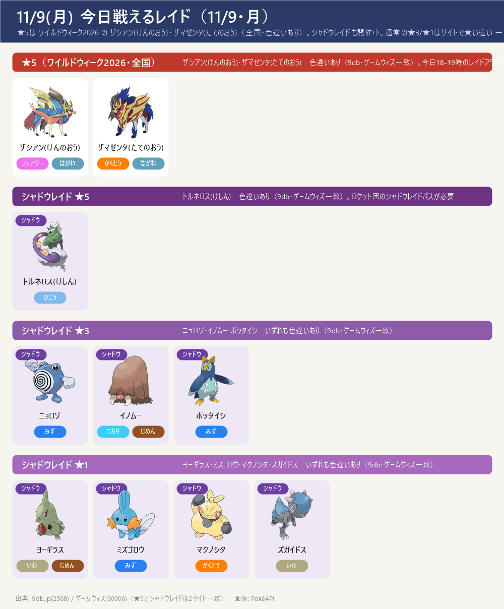
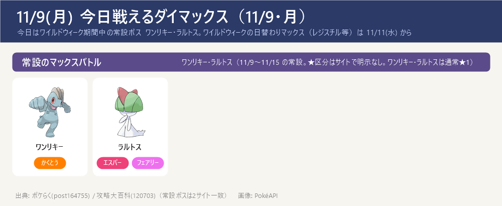
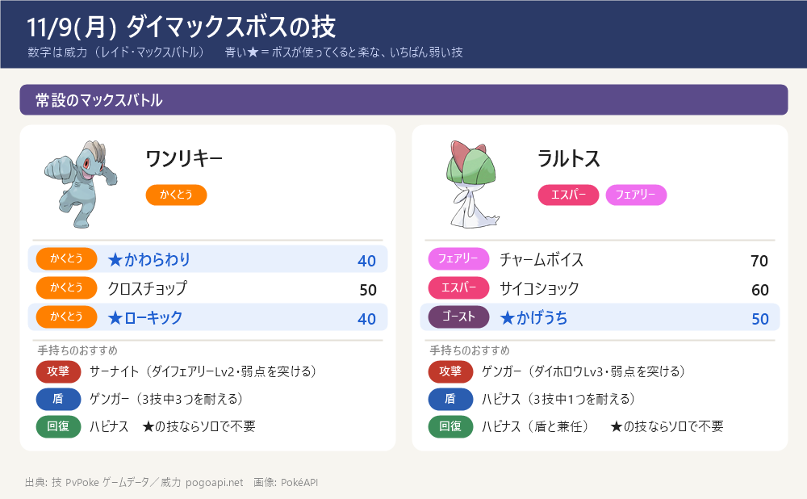

今日のポイント
- 【今日10:00〜】ワイルドエリア Into the Wild 開始（〜11/13(金)20:00）。ザマゼンタを王の姿（たてのおう）にする ★5 レイドが今日から（王の姿にする条件はゲーム内で確認）。今日18:00〜19:00 レイドアワーはザシアン。相棒ザシアンが仲良し以上になっているか確認
- GOパス デラックス：Into the Wild（14.99ドル相当）を最後までクリアするとぎんのおうかんがもらえる → ザシアンの攻撃特訓（10→15）に使う。ポイント獲得は 11/15(日)18:00 まで
- 今日から「ワイルドウィーク2026」（全国） 11/9(月)10:00〜11/13(金)20:00。全国の★5レイドに ザシアン(けんのおう)・ザマゼンタ(たてのおう)（どちらも色違いあり）が登場
- レイドアワー：今日 11/9(月) 18:00〜19:00 ザシアン(けんのおう)（明日 11/10(火) の同時間は ザマゼンタ(たてのおう)）。短時間に★5を多くまわせる時間帯
- GOパス：ワイルドウィーク2026（11/9 10:00〜11/15 18:00）。報酬に ダイマックスメルタン（初登場）・ぎんのおうかん など（ポケらく・k1persia）
- マックスバトルの日替わりは 11/11 から：11/11(水) レジスチル ／ 11/12(木) レジドラゴ（初登場） ／ 11/13(金) ラティアス・ラティオス。今日 11/9・明日 11/10 は常設の ワンリキー・ラルトス
- 野生の出現：コイル・オンバット・トゲデマル。色違いチャンス：メルタン・コレクレー（ポケらく）
- 今日はシャドウレイドに トルネロス(けしん)★5 ほか（色違いあり・下の枠に）
今日戦えるレイド（11/9・月）
★5は ワイルドウィーク2026 の ザシアン(けんのおう)・ザマゼンタ(たてのおう)（全国・色違いあり）。シャドウレイドも開催中。通常の★3/★1はサイトで食い違い → 下の注記・ゲーム内で確認を
- ★5 ザシアン(けんのおう)・ザマゼンタ(たてのおう)は ワイルドウィーク2026（11/9〜11/13）で全国の通常★5レイドに登場。色違いあり。レイドアワーは 11/9(月) ザシアン・11/10(火) ザマゼンタ（各18:00〜19:00）
- シャドウレイド（トルネロス(けしん)★5／ニョロゾ・イノムー・ポッタイシ★3／ヨーギラス・ミズゴロウ・マクノシタ・ズガイドス★1）は、ロケット団のシャドウレイドで戦える。色違いあり
- 通常の★3・★1・メガレイドはサイトで食い違い：9db は ★3 クリムガン・ミミズズ、ゲームウィズは デスカーン・オーロット等（ハロウィン期の未更新と見られる）→ 2サイトで一致しないため今回は載せず。実際の枠はゲーム内で確認を

今日戦えるダイマックス（11/9・月）
今日はワイルドウィーク期間中の常設ボス ワンリキー・ラルトス。ワイルドウィークの日替わりマックス（レジスチル等）は 11/11(水) から
- 今日 11/9(月)・明日 11/10(火)は ワイルドウィーク期間中の常設ボス（ワンリキー・ラルトス）。マックス粒子やダイマックスのアメ稼ぎに
- ワイルドウィークの日替わりマックスバトルは 11/11(水) レジスチル ／ 11/12(木) レジドラゴ（初登場） ／ 11/13(金) ラティアス・ラティオス。さらに 11/14(土) ダイマックスディアルガ（全国・この日限定） ／ 11/15(日) ダイマックスパルキア
- ダイマックスメルタン（初登場）は『GOパス：ワイルドウィーク2026』の報酬から入手できる（ポケらく・k1persia）
- 【各ボスのスペシャルアタック候補】（下のカード。数字はレイド・マックスバトルでの威力。★＝ボスが使ってくると楽な、いちばん弱い技（ボスと同じタイプの技は1.2倍で計算。こちらのポケモンとの相性は見ていない）。戦闘中に技名が出たら受け役を合わせる）


サカキ対策（シャドウゼクロム）：攻略ページへ（別ページ）
締め切り・やること：まとめページへ（別ページ）
この先の予定（タップで開閉）
- 11/10(火) 18:00〜19:00 レイドアワー ザマゼンタ(たてのおう)（色違いあり）
- 11/11(水) ダイマックスレジスチル ／ 11/12(木) ダイマックスレジドラゴ（初登場） ／ 11/13(金) ダイマックスラティアス・ラティオス（ワイルドウィークの日替わりマックスバトル）
- 11/13(金) 20:00 ワイルドウィーク2026 終了。GOパス：ワイルドウィーク2026 は 11/15(日) 18:00 まで
- 11/14(土) ダイマックスディアルガ（全国・この日限定） ／ 11/15(日) ダイマックスパルキア（全国）。カイリキー(カウンター)などの対策ポケモンを育てておくと◎
- 11/14(土) 17:00〜 メテノシャワー（しし座流星群・〜11/19）
サイトで違っていた点（タップで開閉）
- 通常の★3/★1/メガレイド：9db(2308) は 11/9 分として ★3 クリムガン・ミミズズ などを表示、ゲームウィズ(60906) は デスカーン・オーロット・ダダリン（★3）、ヨマワル・プルリル・ヒトモシ（★1）、メガヤミラミ・ギラティナ(A) を表示。ゴースト系のラインナップはハロウィン期（〜11月初旬）の未更新と見られる → 2サイトで一致しないため通常★3/★1/メガは今回は載せず。ゲーム内で確認を
- ★5とシャドウレイド（ザシアン(けんのおう)・ザマゼンタ(たてのおう)、トルネロス(けしん)、ニョロゾ・イノムー・ポッタイシ、ヨーギラス・ミズゴロウ・マクノシタ・ズガイドス）は 9db・ゲームウィズで一致 → 採用
- 今日のマックスバトルのボス：マックスバトル専用ページ(9db 20859・ポケらく post95707)は 11/9 単日の明示がなく、ワイルドウィーク記事(ポケらく post164755)と月間まとめ(攻略大百科 120703)が「11/9〜11/15 の常設は ワンリキー・ラルトス」で一致 → これを採用。★区分の明示はなし
- ダイマックスボスの技候補はゲームデータ(PvPoke)から（おんがえし・やつあたりは除外）、威力は pogoapi.net
出典: pokemongo-raku.com（ワイルドウィーク2026 post164755・マックスバトル post95707）／9db.jp/pokemongo（レイド2308・マックス20859・イベント4351）／pokemongo.gamewith.jp（レイド60906）／pokemon.gamepedia.jp/go（11月マックス120703）／k1persia.com（ワイルドウィーク2026）／inside-games.jp（2026-11-09 重要ポイント）／pvpoke.com ゲームデータ（技候補）
画像: PokéAPI ／ 2サイト以上で一致した情報だけを載せています